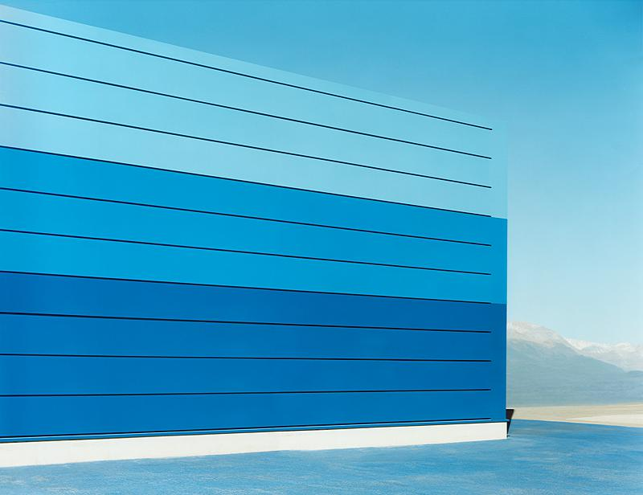
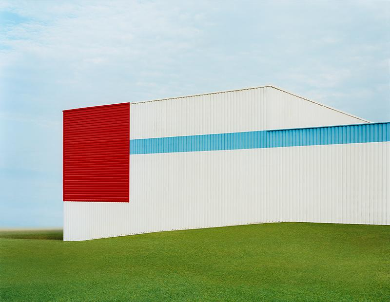
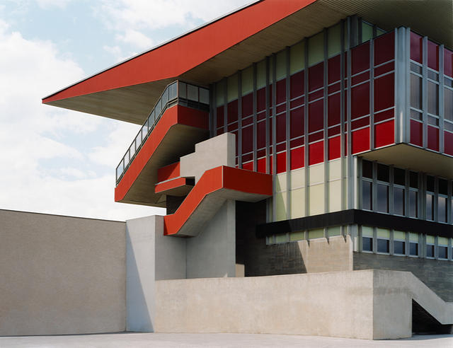
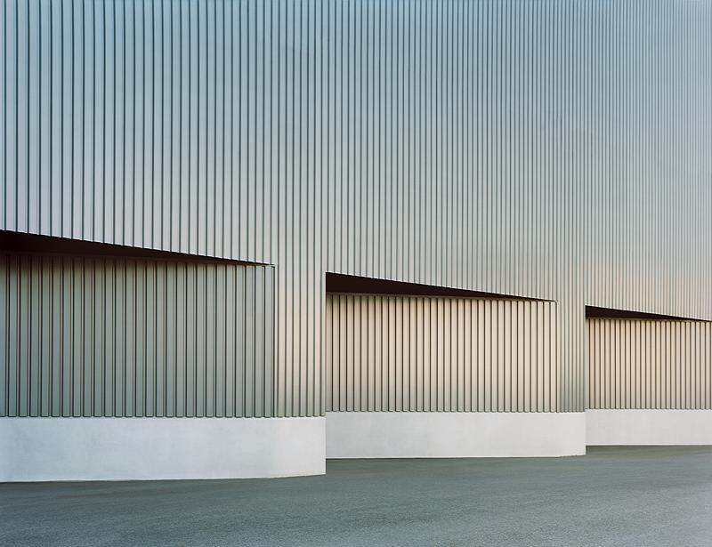
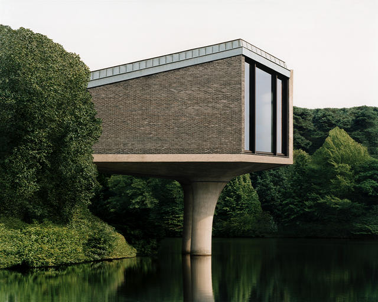
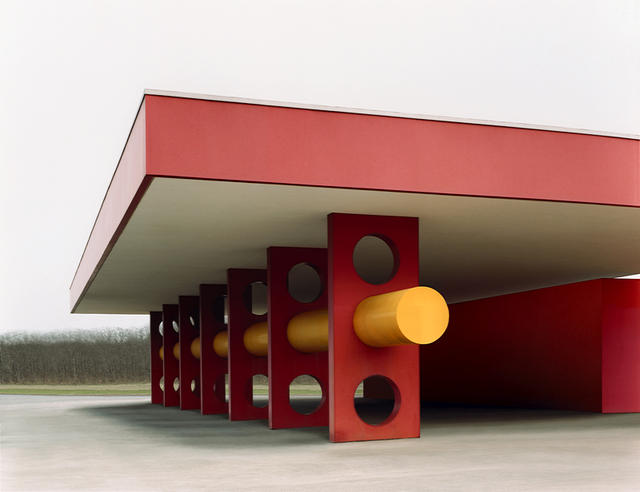
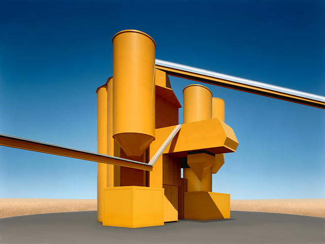
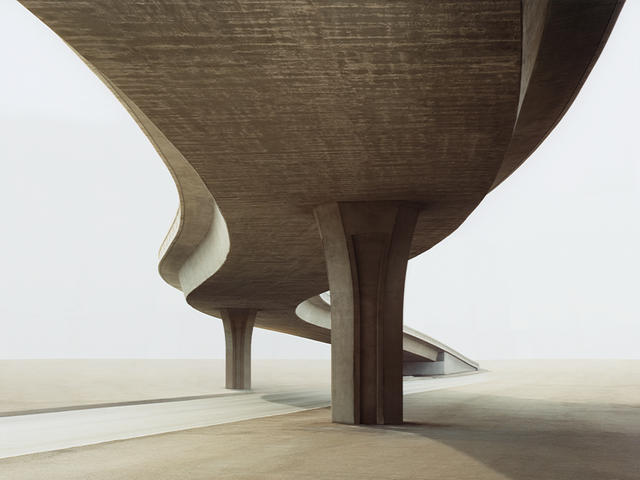
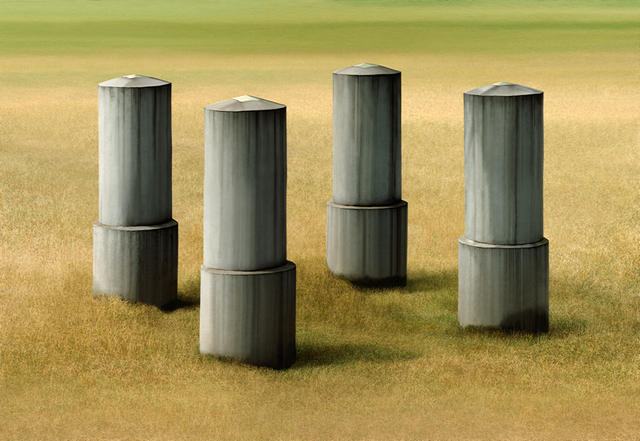
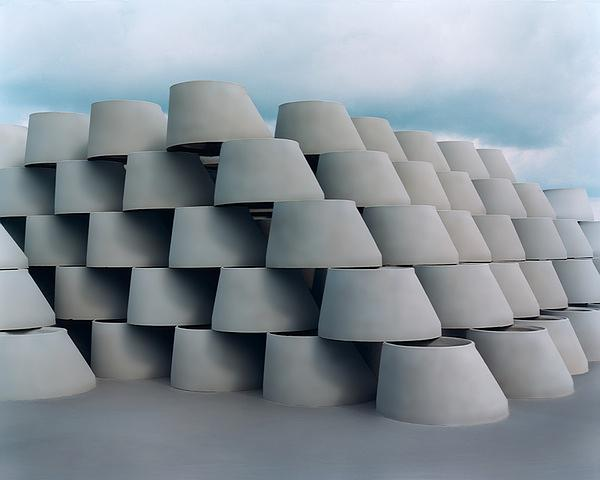

返回
人 像
风 光
建 筑
纪 实
静 物
约瑟夫·舒尔茨 Josef Schulz
迈克尔·沃夫 Michael Wolf
贝歇夫妇
特雷·拉特克利夫 Trey Ratcliff
约瑟夫·舒尔茨 Trey Ratcliff
波兰摄影师Josef Schulz拍摄了很多日常的建筑，并且建筑中都没有人的出现。拍摄出的作品色彩浓郁，结构鲜明，很有个人的极简主义风格。










Copyright : xdfzhanzge@126.com